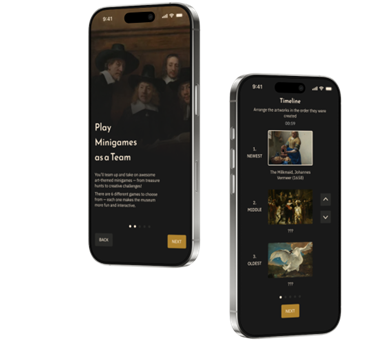
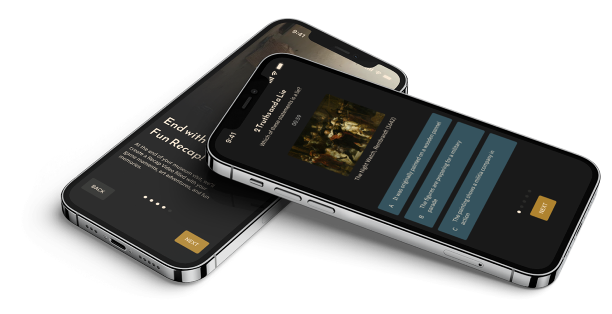
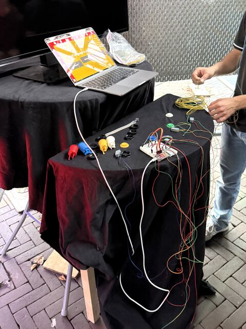
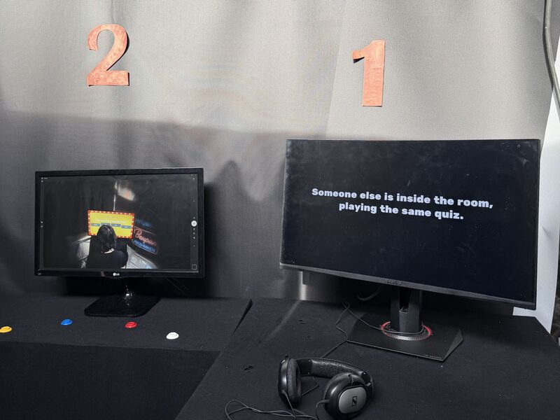
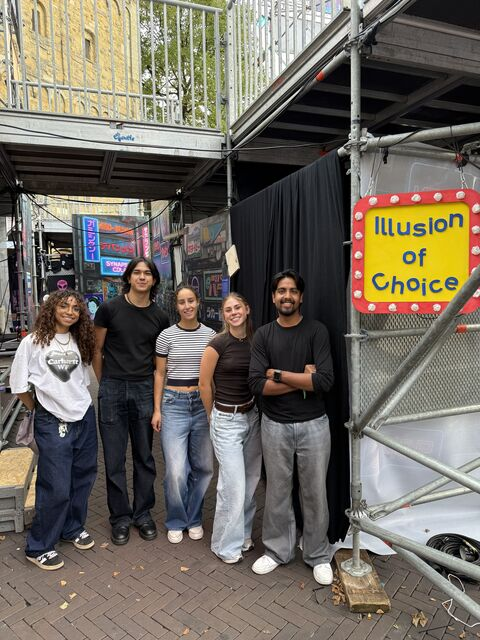

Interactive Yoga Application
During my studies, I worked on several innovative projects. One of those projects is a interactive application. It is designed for people that want to learn yoga but do not have the time or the money. It has different difficulty levels. And while you are doing the poses, you get live feedback. In the video is more explanation and a preview.
App for the Rijksmuseum
Together with my project group, I developed an educational and playful app for the Rijksmuseum. This app was specifically designed to engage young visitors and make their museum experience more interactive and fun. Through games, fun facts, and scavenger hunts, children are guided through the museum’s collections in an entertaining way. The app is tailored to the world of children and aligns with educational learning goals. click here to open the prototype on Figma.


GOGBOT art installation
The theme for this project was art and technology, so me and my project group wanted to create an immersive experience using technology. Illusion of Choice is an interactive experience that explores how digital systems quietly control behavior and reward obedience. What feels like your own decision may already be influenced without you noticing. Inspired by the parallels between humans and domesticated animals, the dynamic of control mirrors how domesticated animals are trained, not through force but through routine. This installation invites you to reflect on power, surveillance, and manipulation in the digital age.


